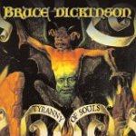

|
|
||
Bruce Dickinson : Tyranny of Souls (2005) |
|

http://www.screamforme.com |
1. Mars Within (Intro) 1:41 |
8/10 |
|
Sexto proyecto solitario de Bruce Dickinson, con su colaborador habitual el guitarrista y productor Roy Z, Tyranny of souls es otro trabajo del vocalista de Iron Maiden que, como viene siendo normal, se mueve en terrenos distintos a los de la legendaria banda británica, aunque sin abandonar el suelo firme del heavy metal. "Mars within" establece una atmósfera progresiva e inquietante, que se ve atravesada de parte a parte por la guitarra que abre "Abduction", un buen tema de heavy metal, tenazmente enraizado en la tradición del metal británico con un rápido solo de guitarra y partes muy pegadizas. Entre el doble bombo surge "Soul intruders", que modera luego su ritmo para ceder el protagonismo a la voz de Bruce Dickinson que luce en todo su esplendor en el estribillo. La siguiente canción, "Kill devil hill", es un medio tiempo con algunos brillantes pasajes épicos y una original parte instrumental. "Navigate the seas of the Sun" es una balada, acústica en su mayor parte, emocionante, con un precioso estribillo y espacio más que suficiente para que Bruce luzca la voz. Después de "River of no Return" otro medio tiempo no muy destacable, llega "The power of the sun", tema de ritmo rápido y con uno de los estribillos más memorables del disco. "Devil on a Hog" se acerca más al hard rock que al metal, y aunque el estribillo es llamativo, la canción no termina de cuajar. "Believil" es una composición extraña, progresiva, lúgubre, de guitarras muy densas, ritmo lento, algunos coros aterradores y un estribillo bastante angustioso. Completa este disco "A tyranny of souls", otro tema lento, de nuevo bastante oscuro con un estribillo interesante, una parte central más contundente, y un original solo de guitarra. Tras unos primeros discos aparentemente más exploratorios, y que iban del hard rock al metal progresivo, Bruce Dickinson parece que ha encontrado su estilo en el metal clásico, aunque con distintivos elementos propios. Este disco está lejos de ser el "Accident of Birth", sin duda su mejor trabajo, pero es un otro buen disco que anotar en la carrera del hombre de la voz de acero. |
||
- Crítica escrita por Rubén Béjar - |
||